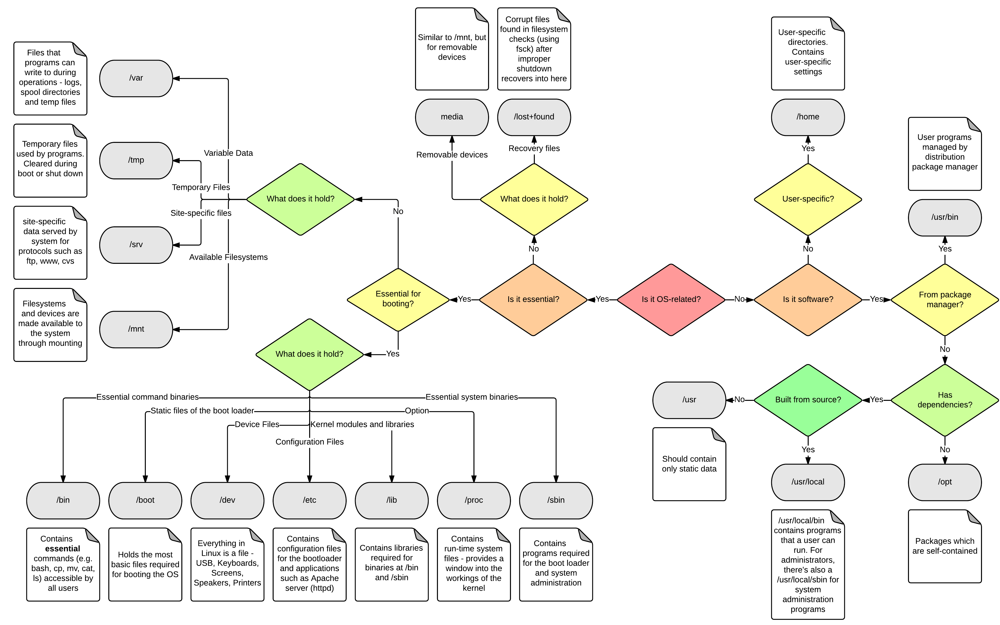

Arquivos e diretórios¶
Lançadores (.desktop)¶
Os lançadores, é um arquivo de texto comum com meta informações e permissão para executar um comando que geralmente é o laçamento de um aplicativo. Por isso que geralmente os laçadores também são chamados de atalhos.
Para criar um lançador basta criar um arquivo com a extensão .desktop em /usr/share/applications para ser visível a todos usuários, ou em ~/.local/share/applications para ser visível apenas para o usuário. O conteúdo do lançador deve informar os dados da aplicação que será executada, seguindo o seguinte esquema:
[Desktop Entry]
Type=Application # tipo.
Version=1.0 # versão.
Name=Meu aplicativo # nome.
Comment=Meu aplicativo de exemplo # comentário do tooltip.
Exec="/opt/meu app.sh" # comando de execução.
Icon=/opt/meu app/fig.png # local do ícone a ser usado.
Terminal=false # se roda no terminal.
Categories=Languages;Java; # categorias onde deve ser listada.
Comando para verificar se o arquio .desktop está correto:
desktop-file-validate <arquivo>.desktop
Variáveis de ambiente/shell¶
Variáveis são estruturas na memória de um sistema que permitem armazenar dados. Elas podem ser criadas por uma aplicação qualquer que esteja sendo executada, ou ainda podem ser criadas pelo próprio sistema operacional, durante sua inicialização ou em momentos específicos.
Existem dois tipos de variáveis de sistema no Unix/Linux:
-
Variáveis de ambiente São variáveis definidas para o shell atual e que são herdadas por quaisquer shell ou processo filho. São também conhecidas como variáveis globais. Estas variáveis são empregadas para passar informações para processos lançados a partir do shell. O shell mantém variáveis de ambiente que armazenam informações específicas sobre a sessão do shell ou do ambiente de trabalho, como o nome do usuário atualmente logado, nome do sistema, UID do usuário, caminhos de busca para comandos, entre outros. As variáveis de ambiente podem ser listadas através dos comandos abaixo:
printenv # ou env -
Variáveis de shell São variáveis contidas exclusivamente no shell no qual elas foram configuradas ou definidas. São também conhecidas como variáveis locais. Geralmente são usadas para manter registro de dados temporários, como por exemplo, o valor do diretório de trabalho atual. As variáveis de shell podem ser listadas através do comando abaixo:
set
A tabela abaixo possui as variáveis de ambiente e de shell mais comuns em Unix/Linux:
| Variável | Função |
|---|---|
| BASH_VERSION | Armazena a versão do shell bash em execução, em formato legível por humanos. |
| CDPATH | Caminho de busca do comando cd. |
| DIRSTACK | Pilha de diretórios disponíveis para os comandos pushd e popd. |
| DISPLAY | Configura o valor do display X. |
| EDITOR | Configurar o editor de texto padrão do sistema. |
| HISTFILE | Nome do arquivo no qual o histórico de comandos é salvo. |
| HISTFILESIZE | Número máximo de linhas contidas no arquivo de histórico. |
| HISTSIZE | Número de comandos a serem armazenados no histórico de comandos. O valor padrão é 500. |
| HOME | Diretório pessoal do usuário atual. |
| HOSTNAME | Nome do computador. |
| IFS | “Internal Field Separator” (Separador de Campos Interno). Caractere usado para separar palavras após a expansão e para dividir linhas em palavras ao usar o comando read do shell. O valor padrão é "espaço + tab + newline". |
| LANG | Configurações de localização e idioma atuais, incluindo a codificação de caracteres. |
| PATH | Caminhos de busca para os comandos. É uma lista de diretórios, separados por dois-pontos ":", nos quais o shell procura pelos executáveis dos comandos. |
| PS1 | Configurações do prompt do usuário. |
| PWD | Valor do diretório de trabalho atual. |
| RANDOM | Retorna um número aleatório entre 0 e 32767. |
| TMOUT | Timeout padrão do comando read do shell. |
| TERM | Tipo de terminal de login do usuário. |
| SHELL | Configuração de caminho do shell que interpretará os comandos digitados. Geralmente, é o shell bash. |
| USER | Usuário logado atualmente. |
Variável $PATH¶
É uma variável de ambiente de sistemas tipo Unix que armazenam locais de diretórios que irão possuir uma visibilidade global no shell. Todas aplicações contidas nestes diretórios podem ser "chamadas" sem a necessidade de informar o caminho completo até a aplicação. Estes diretórios podem ser definidos tanto pelo sistema, quanto pelo usuário.
Quando o usuário digita um comando no prompt de comando, o shell não vai procurar em todos os diretórios para ver se tem um programa com esse nome, mas apenas em diretórios específicos, definidos na variável $PATH.
Mesmo comandos simples como ls, cd, mkdir, rm, por exemplo, são apenas programas que geralmente ficam no diretório /usr/bin que esta em $PATH. Outros diretórios que possuem aplicações e são definidos em $PATH são: ~/.local/share/applications, /usr/local/bin/ e /usr/local/sbin.
Comando para exibir as variáveis de ambiente que já foram definidas.
echo $PATH
# ou para melhor visualização
echo "${PATH//:/$'\n'}"
Comando para adicionar mais um diretório nas variáveis de ambiente.
export PATH=$PATH:/<novo-local-diretorio>
Para remover um diretório é necessário adicionar todos diretórios novamente, exceto o que será removido.
# listar conteúdo de $PATH
echo $PATH
# redefinir o conteúdo de $PATH sem o diretório a ser removido
export PATH=<local-diretorio1>:<local-diretorio2>:<local-diretorio3>
A variável $PATH também pode estar definida nos arquivos abaixo. Neste caso, elas serão concatenadas com a variável $PATH principal.
- Nível de usuário:
.bashrc,.bash_profile,.bash_logine.profile. - Nível de sistema:
/etc/environment,/etc/profile,/etc/profile.d/e/etc/bash.bashrc.
Organização dos diretórios¶
A tabela abaixo mostra qual a finalidade dos principais diretórios em sistemas Unix/Linux:
| Directory | Description |
|---|---|
| / | Primary hierarchy root and root directory of the entire file system hierarchy. |
| /bin | Essential command binaries that need to be available in single user mode; for all users, e.g., cat, ls, cp. |
| /boot | Boot loader files, e.g., kernels, initrd. |
| /dev | Essential device files, e.g., /dev/null. |
| /etc | Host-specific system-wide configuration files. There has been controversy over the meaning of the name itself. In early versions of the UNIX Implementation Document from Bell labs, /etc is referred to as the etcetera directory, as this directory historically held everything that did not belong elsewhere (however, the FHS restricts /etc to static configuration files and may not contain binaries).Since the publication of early documentation, the directory name has been re-explained in various ways. Recent interpretations include backronyms such as "Editable Text Configuration" or "Extended Tool Chest". |
| /etc/opt | Configuration files for add-on packages that are stored in /opt. |
| /etc/sgml | Configuration files, such as catalogs, for software that processes SGML. |
| /etc/X11 | Configuration files for the X Window System, version 11. |
| /etc/xml | Configuration files, such as catalogs, for software that processes XML. |
| /home | Users' home directories, containing saved files, personal settings, etc. |
| /lib | Libraries essential for the binaries in /bin and /sbin. |
| /lib |
Alternate format essential libraries. Such directories are optional, but if they exist, they have some requirements. |
| /mnt | Temporarily mounted filesystems. |
| /opt | Optional application software packages. |
| /proc | Virtual filesystem providing process and kernel information as files. In Linux, corresponds to a procfs mount. Generally automatically generated and populated by the system, on the fly. |
| /root | Home directory for the root user. |
| /run | Run-time variable data: Information about the running system since last boot, e.g., currently logged-in users and running daemons. Files under this directory must be either removed or truncated at the beginning of the boot process; but this is not necessary on systems that provide this directory as a temporary filesystem (tmpfs). |
| /sbin | Essential system binaries, e.g., fsck, init, route. |
| /srv | Site-specific data served by this system, such as data and scripts for web servers, data offered by FTP servers, and repositories for version control systems (appeared in FHS-2.3 in 2004). |
| /sys | Contains information about devices, drivers, and some kernel features. |
| /tmp | Temporary files (see also /var/tmp). Often not preserved between system reboots, and may be severely size restricted. |
| /usr | Secondary hierarchy for read-only user data; contains the majority of (multi-)user utilities and applications. |
| /usr/bin | Non-essential command binaries (not needed in single user mode); for all users. |
| /usr/include | Standard include files. |
| /usr/lib | Libraries for the binaries in /usr/bin and /usr/sbin. |
| /usr/lib\<qual> | Alternate format libraries, e.g. /usr/lib32 for 32-bit libraries on a 64-bit machine (optional). |
| /usr/local | Tertiary hierarchy for local data, specific to this host. Typically has further subdirectories, e.g., bin, lib, share. |
| /usr/sbin | Non-essential system binaries, e.g., daemons for various network-services. |
| /usr/share | Architecture-independent (shared) data. |
| /usr/src | Source code, e.g., the kernel source code with its header files. |
| /usr/X11R6 | X Window System, Version 11, Release 6 (up to FHS-2.3, optional). |
| /var | Variable files—files whose content is expected to continually change during normal operation of the system—such as logs, spool files, and temporary e-mail files. |
| /var/cache | Application cache data. Such data are locally generated as a result of time-consuming I/O or calculation. The application must be able to regenerate or restore the data. The cached files can be deleted without loss of data. |
| /var/lib | State information. Persistent data modified by programs as they run, e.g., databases, packaging system metadata, etc. |
| /var/lock | Lock files. Files keeping track of resources currently in use. |
| /var/log | Log files. Various logs. |
| /var/mail | Mailbox files. In some distributions, these files may be located in the deprecated /var/spool/mail. |
| /var/opt | Variable data from add-on packages that are stored in /opt. |
| /var/run | Run-time variable data. This directory contains system information data describing the system since it was booted. In FHS 3.0, /var/run is replaced by /run; a system should either continue to provide a /var/run directory, or provide a symbolic link from /var/run to /run, for backwards compatibility. |
| /var/spool | Spool for tasks waiting to be processed, e.g., print queues and outgoing mail queue. |
| /var/spool/mail | Deprecated location for users' mailboxes. |
| /var/tmp | Temporary files to be preserved between reboots. |
{kind=link}

Principais comandos¶
ls¶
Listar os arquivos de um diretório.
$ ls
[-l] Mostra arquivos em lista.
[-h] Mostra tamanho dos arquivos em unidade proporcional ao tamanho.
[-a] Mostra os arquivos ocultos.
Exemplos:
Listar arquivos em forma de lista incluindo os ocultos.
ls -la
du¶
Ver espaço ocupado pelos diretórios.
$ du
[-d] Profundidade da listagem recursiva.
[-h] Mostra tamanho dos arquivos em unidade proporcional ao tamanho.
[-c] Mostra o total de espaço ocupado.
Exemplos:
Ver espaço ocupado por um.
du -h -d 1 <diretorio>
Ver lista de arquivos em ordem decrescente de tamanho.
du -h -d 1 <diretorio> | sort -h
dd¶
Cópia bit a bit de uma arquivo.
$ dd
[if] Arquivo de origem.
[of] Local de destino.
[bs] Tamanho de cada bloco a ser copiado.
[count] A quantidade de blocos que serão copiados.
Exemplos:
Copiar aquivo .iso para uma partição ou pendrive.
dd if=ubuntu.iso of=/dev/sdc
Criar arquivo com tamanho prefixado.
Arquivo de 10 MB (10485760 bytes = 10*1024*1024)). O parâmetro count=1 representa o número de iterações a serem realizadas. No caso uma iteração com tamanho de bloco ‘10485760’ = 10 MB. O parâmetro
if=/dev/zero representa o dispositivo de valores nulos.
dd if=/dev/zero of=arquivo bs=10485760 count=1
Apagar dados definitivamente.
Gravando zeros nos setores. Opção mais rápida.
dd if=/dev/zero of=/dev/sda bs=1M
Gravando números aleatórios. Opção mais demorada, porém mais segura contra equipamentos sofisticados para recuperar dados.
dd if=/dev/urandom of=/dev/sda bs=1M
Recuperar dados de um disco defeituoso.
Copiar para outra mídia, suprimindo erros encontrados.
dd if=/dev/sda of=/dev/sdb bs=4k conv=noerror,sync
Copiar para uma arquivo .img
dd if=/dev/sda of=/tmp/sda disk.img bs=4k conv=noerror,sync
wc¶
Ver informações sobre um arquivo.
$ wc
[-c] Tamanho em bytes.
[-m] Quantidade de caracteres.
[-l] Número de linha.
[-w] Quantidade de palavras.
Exemplos:
Ver a quantidade de palavras de um arquivo.
wc -w arquivo.txt
grep¶
Encontrar palavras em arquivos de texto.
$ grep
[-E] (antigo egrep) Interpreta o padrão como uma expressão regular estendida (regexp).
[-F] (antigo fgrep) Interpreta o padrão como uma string fixa, sem expressão regular. Otimizado para busca de substrings.
[-G] Interpreta o padrão como um expressão regular básica (padrão).
[-i] Não diferenciar maiúsculas e minúsculas.
[-r] Busca recursiva sem seguir links simbólicos.
[-R] Busca recursiva seguindo links simbólicos.
[-e <padrao>] Procura pela expressão regular.
[-n] Exibe o número de linhas que contém o padrão.
[-c] Exibe apenas o número das linhas que contém o padrão.
[-f <arquivo>] Lê o padrão a partir do arquivo especificado.
[-l] Exibe apenas os nomes dos arquivos que contém o padrão.
[-v] Exibe as linhas que não contém o padrão.
[-w] Procura apenas palavras inteiras.
Exemplos:
Exibir as linhas onde a palavra registro aparece nos arquivos durante a busca recursiva a partir do local corrente.
grep -Fir "registro"
# ou especificar raiz da busca
grep -Fir "registro" /ect
Busca recursiva a partir do local informado com a informação do número de linhas retornadas.
grep -Fir "registro" ~/imagens | wc -l
Exibe apenas o número da linha do arquivo onde registro está no início da linha.
grep -il "^registro" ~/arquivo.txt
Usando o parâmetro -E. Exibe a linha do arquivo onde possui uma palavra que inicia com "re" e termina com "tro".
grep -iE "re(.*)tro" ~/arquivo.txt
# ou escapando os parênteses
grep -i "re\(.*\)tro" ~/arquivo.txt
tar¶
Empacotamento e compressão de arquivos.
O tar não compacta os arquivos, apenas une todos os arquivos em um só. Para a compactação, deve ser informado no parâmetro qual tipo de compactação será aplicada no arquivo .tar.
$ tar
[-c] Criar um novo arquivo .tar.
[-x] Extrair os arquivos.
[-v] Modo verboso. Mostrar detalhes.
[-f <arquivo>] Nome do arquivo que será criado ou extraído.
[-C] Diretório de destino, onde o arquivo extraído ou gerado.
[-a] Modo compactação automática, baseada na extensão informada no nome do arquivo.
[-z] Compactação gzip (.tar.gz, .tgz).
[-j] Compactação bzip2 (.tar.bz, .tbz).
Obs: Por padrão tar é recursivo, portanto não precisa do parâmetro -r.
Exemplos:
Criar um arquivo .tar contendo todos arquivos do diretório home.
tar -cvf arquivo.tar home/
Criar um arquivo .bz2 de todos arquivos do diretório atual.
tar -cvjf arquivo.tar.bz *
Extrair o arquivo para o diretório home.
tar -cvjf arquivo.tar.bz -C /home
Referências¶
- https://developer.gnome.org/integration-guide/stable/desktop-files.html.pt_BR
- https://sempreupdate.com.br/como-configurar-uma-variavel-no-path-do-linux/
- http://www.bosontreinamentos.com.br/linux/como-listar-as-variaveis-de-ambiente-no-linux/
- https://en.wikipedia.org/wiki/Filesystem_Hierarchy_Standard